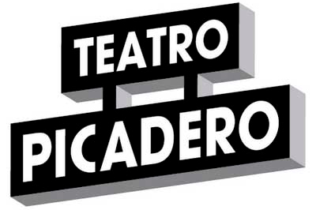
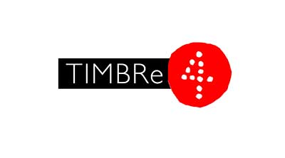

Veni a conocer el Teatro Alternativo

Teatro Picadero
Veni a conocernos!
El Metodo Kairos
Veni a conocernos!

Timbre 4
Veni a conocernos!
Veni a conocernos!
Veni a conocernos!
Veni a conocernos!
Cuando hablamos del teatro nos referimos a una de las más antiguas artes conocidas por la humanidad. Se trata de un arte que busca representar historias frente a una audiencia, combinando actuación, discurso, gestos, escenografía, música y sonido. Al mismo tiempo, se emplea el término teatro como un sinónimo de la dramaturgia, esto es, la escritura de obras pensadas para ser representadas en un teatro.
El teatro nació en Atenas, Grecia, entre los siglos V y VI Antes de Cristo. Los atenienses celebraban los ritos en honor a Dionisio, dios del vino y de la vegetación. Estas primitivas ceremonias rituales acaban evolucionando hacia el teatro, constituyendo uno de los principales logros culturales de los griegos. Cada una de las ciudades y colonias contó con un teatro.
El primer teatro construido fue dedicado a Dionisio. Se dividía en tres partes la orquesta, el lugar para los espectadores y la escena. Los primeros teatros griegos constaban de dos formas: un espacio circular donde se alzaba la estatua de Dionisio y el hemiciclo para los espectadores. Se accedía a través de dos callejones. Las gradas tenían forma de semicírculo.
Los romanos adoptaron la forma y la disposición de los teatros griegos pero construyeron gradas en los lugares donde no existían colinas.
La historia del teatro esta íntimamente vinculada a la historia de la comunicación humana. La expresión oral humana es directamente proporcional al animo mimético de su pensamiento. Es decir, el humano ha necesitado desde sus primeras interacciones vincularse a otro y expresar la realidad, sentimientos y pensamientos a través de palabras, acciones y gestos.
El arte y la religión parecen ser los dos troncos fundamentales que sustentan la expresión dramática en sus orígenes. Las tradiciones religiosas en tribus y organizaciones primitivas son representativas de las primeras condiciones teatrales. Las características chamánicas, los bailes rituales, los cantos de guerra y rituales esotéricos podemos entenderlas como la primera muestra de la tendencia humana y religiosa a accionarse por medio del histrionismo. Es decir, la primera muestra de un lenguaje dramático.
Estas expresiones histriónicas reforzaban el sentimiento de identidad y cohesión grupal. Permitían, también, desarrollar con una de las peculiaridades del humano: ser un ser gregario. El pertenecer a una comunidad, el sentirse aceptado, integrado y representado es una necesidad humana que las expresiones artísticas vienen a materializar.
Entonces, aunque los primeros rasgos teatrales se pueden encontrar en el comportamiento humano desde su propio origen, el desarrollo del concepto de teatro tal como lo conocemos hoy en día, inició durante la época grecorromana. Fueron ellos quienes desarrollaron los conceptos que posteriormente fundarían el arte dramático.
La ritualización religiosa paso a convertirse en mimesis, y a su vez en tragedia. Los espectadores considerados dentro de la ecuación como un receptor de la expresión catártica. Y así, se completó la fórmula que definiría el teatro como arte y componente social.
En América Latina, Argentina ha sido uno de los países que más ha gozado de una actividad teatral prolífica y creativa. Esto se debe en parte buenos Aires de fines del siglo XIX:centro multicultural y pluriétnico. Si hablamos de un punto geográfico donde se ha dado el inicio del arte escénico argentino, este es la ciudad de Buenos Aires. Fue aquí donde en 1783 el virrey Juan José de Vértiz y Salcedo crea la primera casa de comedias.
La ciudad de Buenos Aires, al ser designada capital del Río de la Plata, creció vertiginosamente. Fue entonces cuando el Virrey Vértiz, bajo la aprobación del Cabildo, se hizo responsable de la construcción de un teatro. El objetivo era proporcionar diversión al pueblo que ya contaba con una capital. El 30 de noviembre de 1783 quedó oficialmente inaugurado el Teatro de la Ranchería, en la intersección de las actuales calles Alsina y Perú. Un amplio galpón de paredes de madera, techo de paja y puertas en el frente.

El Teatro Colón de Buenos Aires es una de las salas de ópera más importantes del mundo. Su rico y prestigioso historial y las excepcionales condiciones acústicas y arquitectónicas de su edificio lo colocan al nivel de teatros como la Scala de Milán, la Ópera de París, la Ópera de Viena, el Covent Garden de Londres y el Metropolitan de Nueva York.
Situado en el corazón de la ciudad, en Av. Corrientes y a pocas cuadras del Obelisco, el Teatro San Martín es visitado cada año por un millón de personas. Forma parte del Complejo Teatral de Buenos Aires, que depende del Gobierno de la Ciudad, encargado en los últimos años de llevar adelante una profunda renovación y modernización de sus instalaciones.
Es el teatro de los grandes espectáculos musicales y recibe a los artistas más consagrados, nacional e internacionalmente. Su capacidad es para 3.262 espectadores. El edificio, propiedad de Cordero, Cavallo y Lautaret SA y terminado en 1937, después de tan solo siete meses, es un exponente arquitectónico del estilo racionalista, obra del arquitecto Alberto Prebisch, el mismo que creó el Obelisco de Buenos Aires, y del ingeniero civil Adolfo T. Moret.